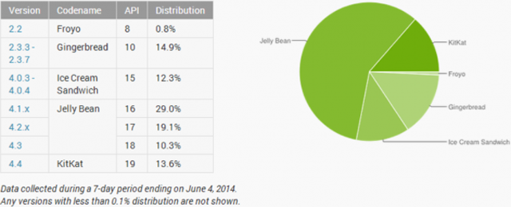
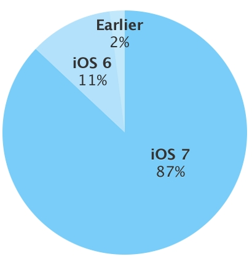

Android Introduction
Ninja Chen
July 2014
Requirement
电脑
PC or MAC
手机
Nexus Samsung XiaoMi
开发环境 Idea or Eclipse
附加 English VPN
Version distribution: Android vs IOS


Android四个基本组件
Activity
BroadcastReceive
Service
Content Provider
Thank you!
中文Android教程/
Android学习之旅/
Android开发者官网/